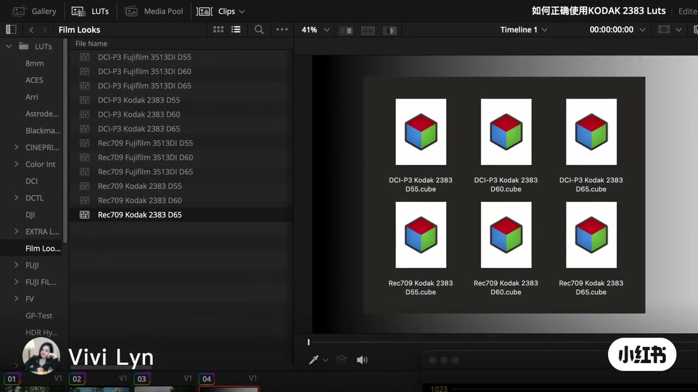
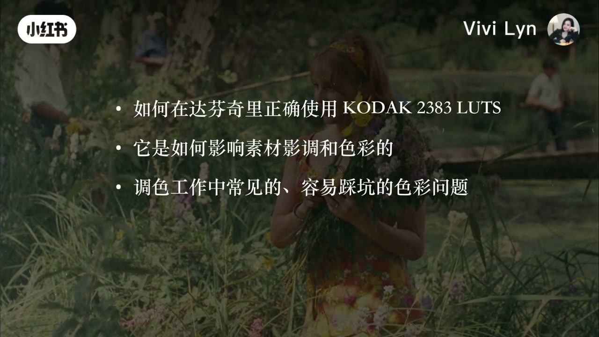
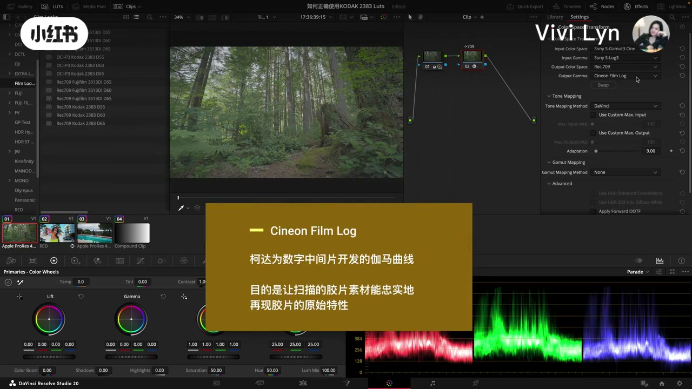
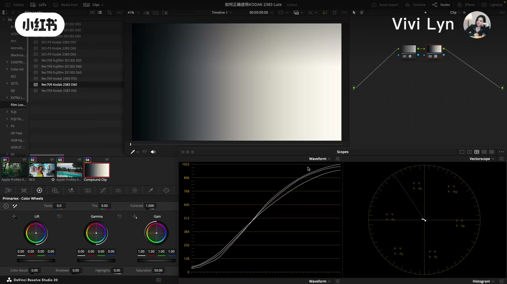
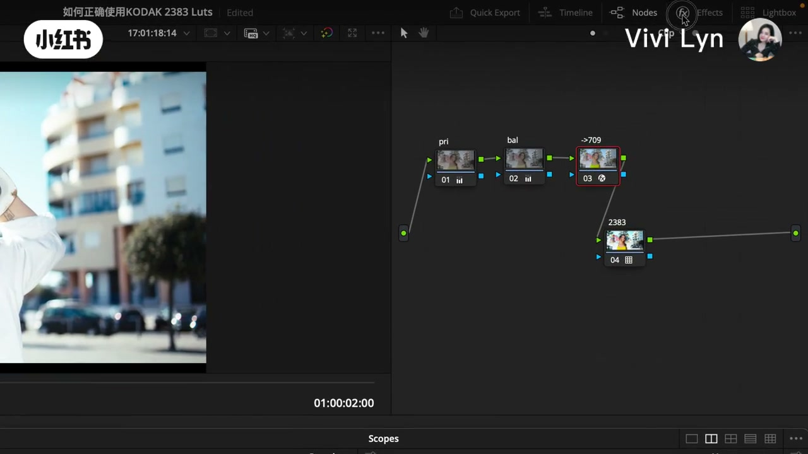
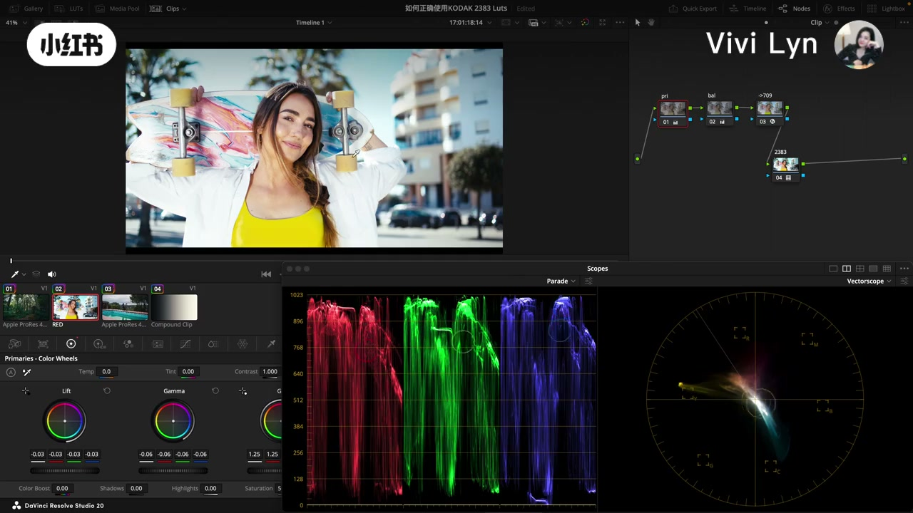
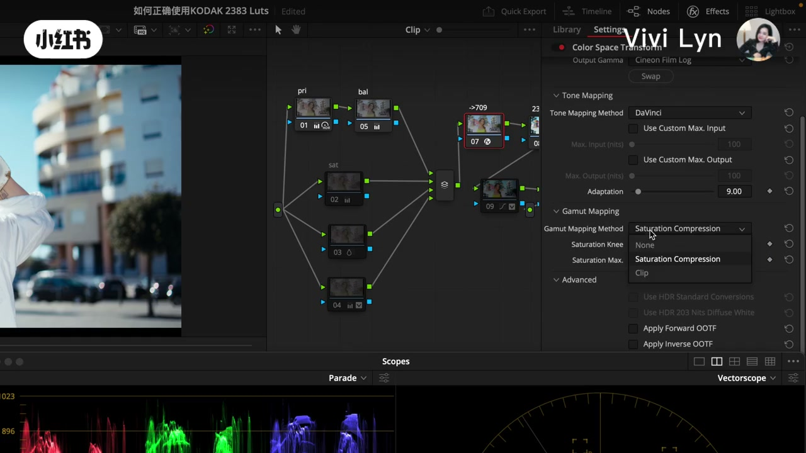
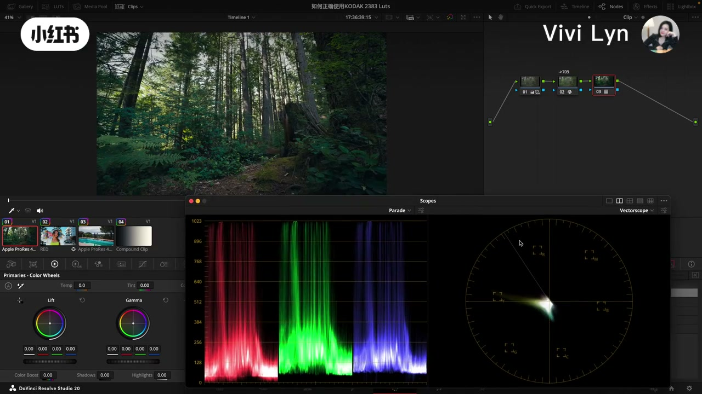
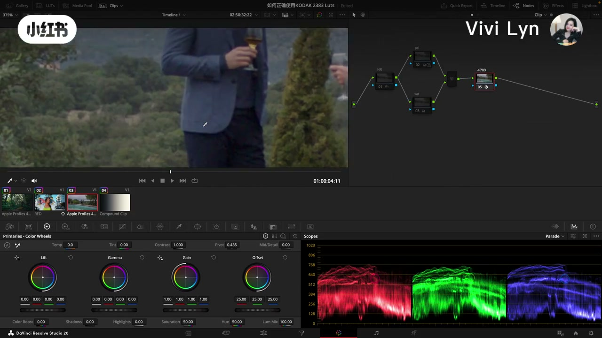
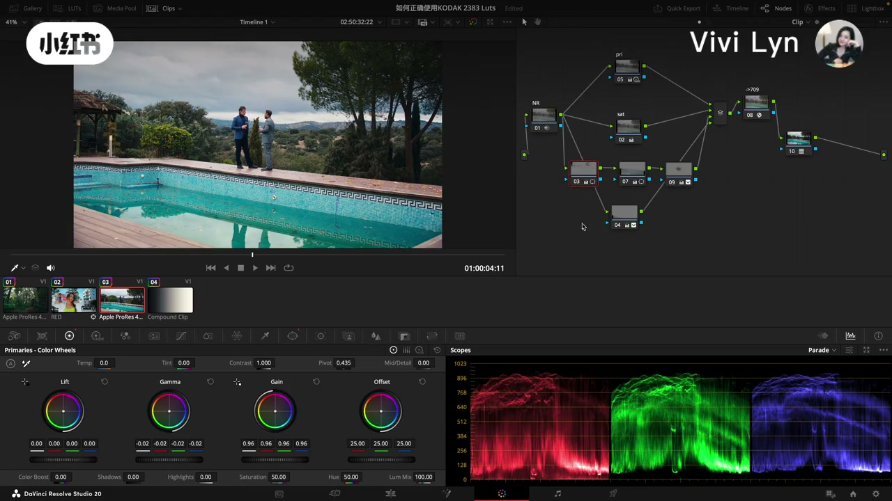

内容要点
笔记标题是「柯达 2383 LUT 的正确使用方式与常见问题」。它不解释这卷胶片的身份，也不报片单。另一条已发布的笔记《Kodak 2383：经典电影色彩密码》停在印片和银幕底色，本页不重复那部分。
知识结构
口播从开头第二秒断到三分多钟。画面先摆出六只 2383：DCI-P3 和 Rec.709，白点 D55、D60、D65。树林素材的色彩空间转换，输入是 Sony S-Gamut3.Cine、S-Log3，输出色域 Rec.709，输出伽马从 Gamma 2.4 改成 Cineon Film Log。黄字说这是柯达为数字中间片做的伽马曲线。灰阶条用来看这条 LUT 把影调弯成什么样。
口播说滑板素材来自 Red 摄影机。她先用色彩空间转换还原成基础 Rec.709，两个节点分别动整体曝光对比和白平衡。套 2383 时，她说唯一改动是把 Output Gamma 换成 Cineon Film Log，再应用 LUT。听写写成 UPGAMA 和 CINEMFILM LOCK，检查器上的字是 Output Gamma 和 Cineon Film Log。
套完以后整体曝光影调超出她认为合理的范围，所以还要再调素材。青绿色衣服往橙黄偏，蓝色滑板和蓝色天空往青偏，这些色相的饱和度也升高。第三个坑是饱和度溢出。产品广告或服装广告里，这些偏移需要再修正。五分钟前后口播中断，画面停在色彩空间转换上，输出伽马仍是 Cineon Film Log。
想要胶片感觉，可以再加质感节点。她把这套 LUT 说成调色起点之一，可以按项目换别的 LUT，也可以继续做风格。矢量图上，Rec.709 时绿色集中在一个方向，有点青黄。套上之后色相分离：偏黄的绿往黄走，偏青的绿往青走。她说刚才看的是 D65，换成 D60、D65，这个问题还在。听写里的 D665 在 LUT 列表里不存在。
最后一条是经过压缩的素材。口播听成 LXMini，画面没有打出机型，这里不采用这个名字。还原成 Rec.709 以后噪点已经很重。她拉回天空高光，做了二级窗口，把泳池高光和一块颜色略压下去，再用一个节点做颜色校正。色温若觉得太冷，她说可以试别的 LUT。
拿它当起点时要留意：过曝，不同色相严重偏离，宽容度不够时容易色彩断裂，还有饱和度溢出。她补了一句，调色除了好看，整体感觉要帮项目和剧情叙事。片尾邀请关注职业调色和电影美学，有一个词听不清，不写入结论。
本片的用法是：用色彩空间转换把素材送到 Cineon Film Log，再套达芬奇 Film Looks 里的 2383，然后按画面去收曝光、色相和饱和。LUT 不是交片节点。
00:00–03:31
口播空着，屏幕先把用法摆出来
开头只留下一句「这大概会是你刷到的目前全网讲解」，随即断掉。三分整附近识别成一串「的」，不能当内容。这三分钟的依据是画面。

六只文件名都写在立方体下面。她没有口播说明什么时候选 DCI-P3、什么时候选 Rec.709。D55 出现在列表里，后面的口播也没有单独讨论它。能确定的只有：这套 LUT 在达芬奇里按目标色域和白点分成了这些文件。

目录把范围定死了。第一条是操作，第二条是 LUT 对画面的影响，第三条是坑。没有「它是印片还是负片」这一问。

同一条树林，早十几秒时输出伽马还是 Gamma 2.4，色调映射方式是 DaVinci，色域映射是 None，并勾着 Apply Forward OOTF。到这一帧，输出伽马换成了 Cineon Film Log。黄字是画面字幕，讲的是这条曲线的来历，不是她在口播里展开的胶片史。节点缩略图上标着指向 709 的字样。效果列表里能看到 Color Space Transform，旁边还有 Film Grain、Halation。这一段她没有打开颗粒。

灰阶条不讲具体景物，只让人看影调被弯到什么程度。她还在 D60 和 D65 之间来回点，口播没有解释两者差在哪。这个差别要等到后面的色相段才被说出来，而且说的是「问题都还在」，不是「哪一档更正确」。
03:31–04:09
滑板素材：还原、平衡，然后只改伽马
口播回到画面时，她先说容易踩坑的地方，随即切到素材。「这是一个 Red 摄影机拍摄的素材。」她用色彩空间转换插件还原成基础的 709，两个节点分别调整整体曝光对比和白平衡。调整完，她把这个结果叫做 709 画面。
滑板这条的输入色彩空间，口播没有念。不能把树林那条的索尼 S-Log3 套到这里。能跟着说的是顺序：先有一个她接受的 709，再套 LUT。

「唯一动的地方就是在这里给它 Output Gamma 换成了 Cineon Film Log，然后应用一个 2383 LUT。」
这是她对「正确使用」给出的操作句。听写原文是 UPGAMA 和 CINEMFILM LOCK，和检查器对不上；正文按屏幕上的 Output Gamma、Cineon Film Log 来写。她接着说，两个画面的区别很明显。区别本身留到下一节，用衣服和天空来指。
04:09–05:59
套完先越界，色相跟着偏
她把第一个常见问题说成：应用完之后，整体曝光影调超出了一个合理范围，所以要在这个基础上再调素材。「合理范围」是她的判断，画面没有给出示波器读数。
第二个问题是色相严重偏移。她假设现在调的是产品广告或服装广告，说这个画面还有不少地方要修正。然后让人对照 709 和应用之后。

她指着两处。第一，青绿色衣服明显往橙黄色偏。第二，原来蓝色的滑板、蓝色的天空往青色偏。而且这些色相的饱和度都有不同程度的提高。这是口播加画面指认，不是对 2383 全部色相的测量。
第三个坑是饱和度溢出。她说特别看某个地方的细节，句子没说完，识别从五分零一秒断到五分半，中间被识别成一串符号。这段不能补写她没说完的细节。

菜单打开不等于她已经选定某一项。这一帧能确认的是：套 LUT 的上游，输出伽马仍放在 Cineon Film Log；饱和相关的映射选项出现在这个检查器里，和她刚才说到的饱和度溢出接在同一段时间。
05:59–08:06
质感可以后加，绿色会在矢量图上分开
口播恢复后，她说如果想增加胶片感觉，还可以再做一个质感细节节点，去模拟胶片。节点图后部确实出现了标着 Texture 的节点。她没有念颗粒大小或强度。
LUT 可以按项目和风格另选。她把这套称为调色起点的其中一个方案，后面还可以雕细节，也可以再做不同的风格化尝试。这是使用边界，不是效果承诺。
她说这套 LUT 还有一个很明显的特点，就是对色相的影响，然后回到第一个画面，看绿色和黄绿色。重点放在矢量图上。听写写成「实量图」。界面打开的是 Vectorscope，正文记成矢量图。

她的观察是：Rec.709 画面里，绿色集中在一个方向，有点青黄。套上 LUT 以后，不同方向的色相分开了。偏黄多一点的绿会往黄色偏，偏青一点的绿会往青色偏。她要人记住矢量图每个方向和色轮方向一一对应，所以这是在用示波器读色相，不是在调一级色轮的旋钮。
接着她加了一个前提：如果素材本身宽容度不是那么大，刚才看到的问题会更麻烦。她说刚才那只是 D65，现在换 D60、D65，问题依然存在。听写先写成 D665，LUT 列表里没有这个名字，只有 D65，这里按文件名改正。D55 仍没有被拿出来比较。
七分半到近八分钟又有一段没有口播，画面仍停在树林和矢量示波器上，没有新的字幕结论。
08:06–09:45
第三条素材噪点已经很重
最后一条，她说是经过压缩的素材。机型被听成 LXMini，缩略图和节点上都没有这个名字，正文不采用。她仍用色彩空间转换把它还原成 Rec.709，然后问为什么说这个素材问题很大：还原之后噪点已经非常严重。她补了一句，调色里确实会遇到各种有问题的素材。

八分半到近九分钟口播又空了一段。画面在这条人和后面的泳池之间切换，节点前面一直留着 NR。和口播对得上的是：她把降噪放在套 LUT 之前，因为 Rec.709 状态已经很吵。
然后她开始改。其他节点和前面一样。天空高光被拉回来一点，做了一个二级窗口。泳池高光稍微压下来，那一块颜色也稍微压了一点。比较关键的一个节点是做颜色校正。她并排着说：这是原来的 Rec.709，这是套了 2383 之后。

她没有把窗口的形状和跟踪过程摊开讲，只交代了三下：天空高光拉回，泳池高光压一点，一块颜色压一点，再加上颜色校正。画面还没有做完。她说还有很多地方可以调，还有风格化可以开发。如果觉得色温太冷，可以试其他不同的 LUT，都是可以的。这句把白点选择留成项目决定，没有指定必须用 D65。
09:45–10:34
四个坑，然后把感觉交给项目
收尾时她把前面的问题再数一遍。要用这套当调色起点，这几个非常容易踩：一个是过曝；第二个是不同色相的严重偏离；第三个，宽容度不够的话容易出现色彩断裂；还有一个饱和度溢出。色彩断裂是在这里才被单独命名的，前面矢量图那段只说了绿色被拆开，以及宽容度不大时问题仍在。
「调色除了保证画面好看之外，整体的感觉是非常重要的。另外还要根据不同的项目、不同的剧情来辅助叙事。」
这是作者立场，不是一条可测量的标准。片尾问观众要不要看职业调色、电影美学，以及一个听不清的相关内容。视频在十分三十四秒结束，最后几秒画面仍停在泳池和那棵节点树上，没有新的字幕清单。